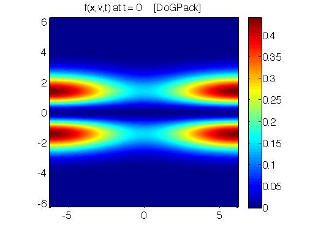
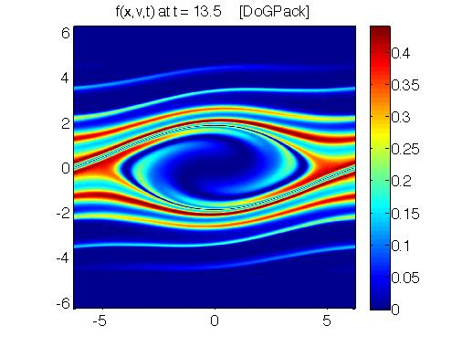
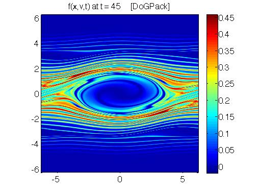
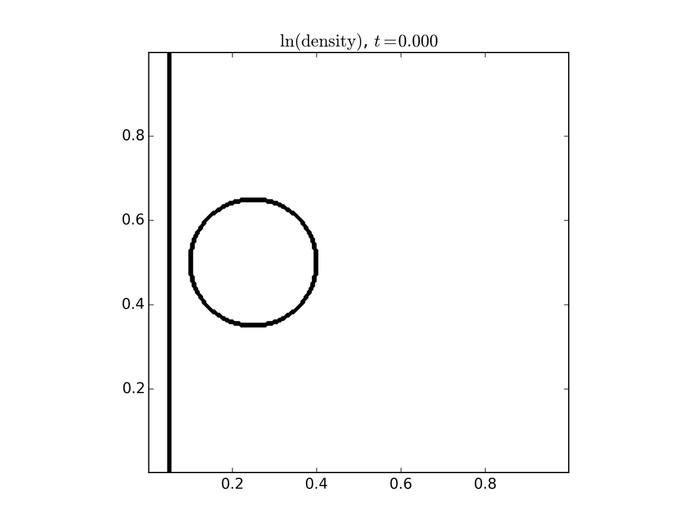
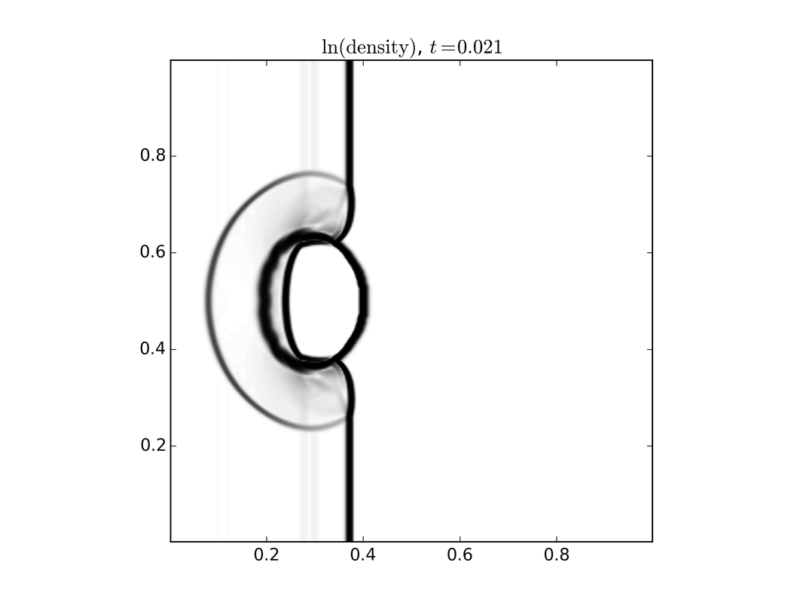
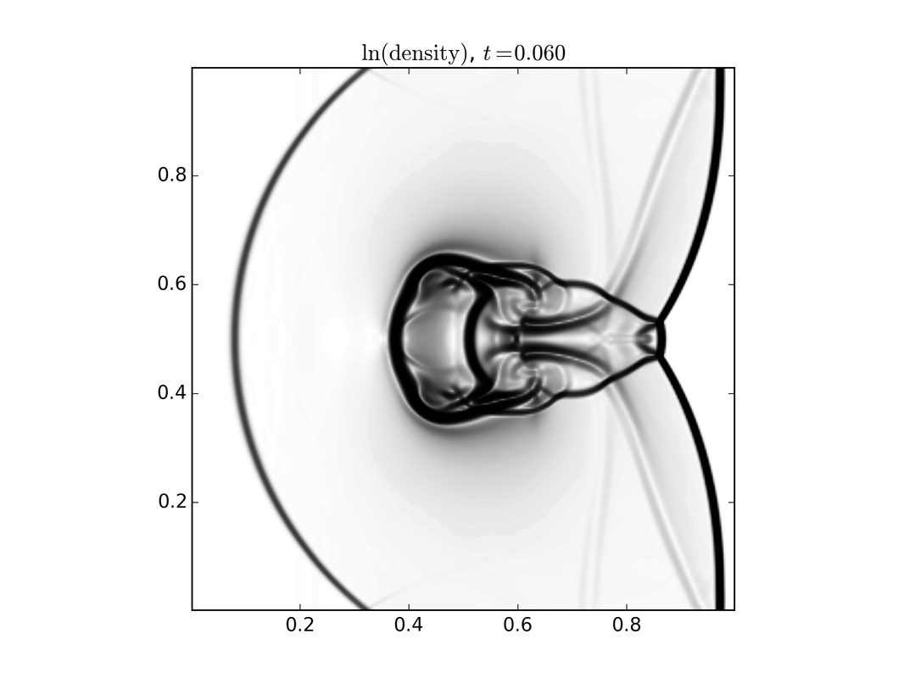
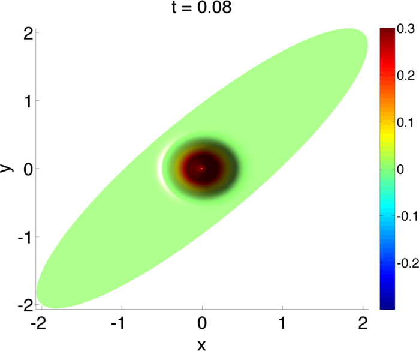
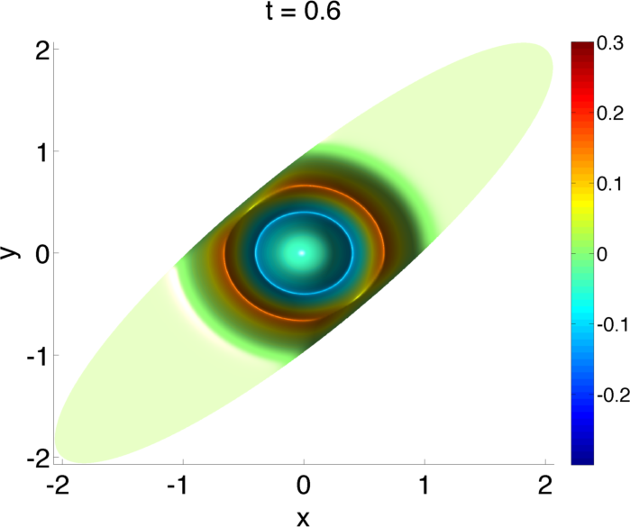
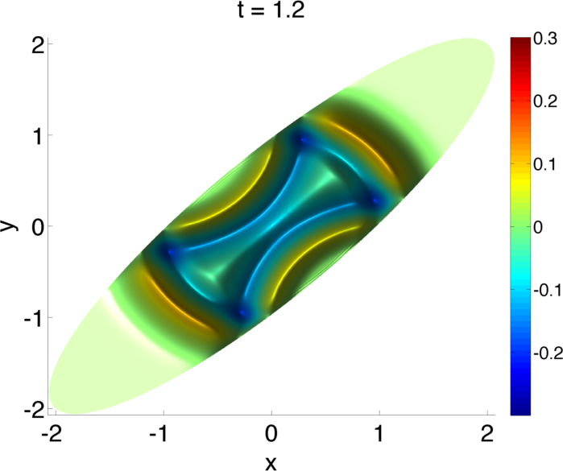

Plasma Science
Plasmas have a huge range of applications in engineering and science. Plasmas are essential in the modern manufacturing of microchips. Plasmas are key in lighting; they are the basis of arclights that are used as street post lights as well as in overhead fluorescent tubes used in lighting most office buildings. Plasmas are finding their way into the medical industry, from sterilization through exciting breakthroughs in wound healing. Further our sun is a plasma and 99% of the visible matter in the universe is in the plasma state.
Plasmas have a huge range of dynamic scales that are coupled in both time and space. Consider time for a second. Bridging time scales includes modeling waves that propagate at the speed of light through waves that propagate at the speed of sound. It is precisely this dynamic range in scales that makes modeling plasmas difficult. This work is really focused on new techniques that help us bridge the scales offering highly accurate solvers that can advance the evolution of the models of these complex systems with greater efficiency than was previously possible. The eventual goal is to move these multiscale tools into large-scale simulation frameworks that engineers and scientists use to study, model and design systems that involve plasma. This will give the engineer and scientist a better set of tools, allowing them to study much larger dynamic ranges in this class of problems than was previously possible, facilitating breakthroughs in design via a virtual laboratory.
Because of the complex nature of a plasma, there are a range of models for these systems. From the most detailed to the most basic models: plasmas can be described with fully kinetic models (both particle and continuum models), multi-fluid models, single fluid models, zero dimensional rate equation models and many things in between. Our group works on a range of these models, seeking to develop methods which will allow us to capture long time behavior in these complex systems.
Kinetic Models
|  |  |  |
The most fundamental models in plasma science are kinetic models. These models describe the probability of finding a particle at a given location with a given velocity at a given time. Hence these models are six dimensional plus time. We have been working on high order methods for understanding the evolution of these systems from a range of angles. To the left is a set of plots of phase space, velocity verses position. The intensity describes the probability of finding a particle at that location. Left to right shows the evolution in time.
Fluid Models
|  |  |  |
While a kinetic model carries the most detailed information about the system, many times this is more information than we need. In this setting we resort to using either multi-fluid models or single fluid models. There is a direct connection between the kinetic model and the fluid model through what is termed moments, which are specific averages over velocity. These models are three dimensional plus time. To the right is a set of images of a single fluid model describing a shock wave interacting with a dense cloud of plasma. Left to right shows the evolution in time.
Long Range Fields
|  |  |  |
In a plasma, the electrons and ions interact with each other through the long-range fields. These fields are set up by the moving charged particles, which in turn are acted on by the fields. Here there are a range of approximations from electrostatic to fully electromagnetic. Bridging these scales is a key challenge for a range of plasmas that behave magneto-statically, which is somewhere between electrostatic and fully electromagnetic. To the left are solutions from a new \(O(N)\) fast implicit wave solver we have been developing to bridge these scales. The results are for an ellipsoidal geometry.
Implicit Wave Propagation and Semi-Implicit Particle Methods for Plasma Simulation - Method of Lines Transpose
In this work we developed a new class of methods for modeling wave propagation, such as acoustic or electromagnetic waves. The major advantage of this new class of methods is that it facilitates modeling problems where there is a separation of scales in time. The primary application that we had in mind when we were developing the method is in the modeling of plasma, the fourth state of matter.
Select Papers:
- M. Causley, A.J. Christlieb, E. Wolf, ''Method of Lines Transpose: An Implicit Solution to the One Dimensional Wave Equation'' , accepted Journal of Scientific Computing and on axriv
- M. Bettencourt M. Causley, A.J. Christlieb, and E. Wolf, ''A Particle-In-Cell Method for The Simulation of Plasmas Based on An Unconditionally Stable Field Solver'' , Journal of Computational Physics, 326, 342-372, 2016
- Y. Cheng, A.J. Christlieb, W. Guo, B. Ong, ''An Asymptotic Preserving Maxwell Solver Resulting in the Darwin Limit of Electrodynamics'', Journal of Scientific Computing, 71(3), 959--993, 2017
Efficient Methods for Solving Kinetic Equations:
In this work we develop a series of particle methods, semi-implicit continuum methods and fully implicit continuum methods that are targeted at accurately solving kinetic models. These methods are necessarily high order in space and time to maintain accuracy over long time simulations of instabilities that arise in plasma.
Select Papers:
- A.J. Christlieb, R. Krasny, J.P. Verboncoeur, J. Emhoff and I.D. Boyd , "Grid-Free Plasma Simulation Techniques'', IEEE Trans. on Plasma Science, 34 (2): 149-165 Part 1 APR 2006
- S. Olson and A.J. Christlieb, "Grid-Free Direct Simulation Monte Carlo'', Journal of Computational Physics, 227{17}, 8035-8064, 2008
- A.J. Christlieb, W.N.G. Hitchon, J.E. Lawler and G.G. Lister, "Integral and Lagrangian Simulations of Particle and Radiation Transport in Plasma.'', Journal of Physics D: Applied Physics, 42 (2009) 194007
- J. Qiu and A.J. Christlieb, "A Conservative high order semi-Lagrangian method for the Vlasov Equation”, Journal of Computational Physics, 229(4), 1130–1149, 2010.
- A.J. Christlieb, W. Guo, M. Mortion and J. Qiu, "A High Order Time Splitting Method Based on Integral Deferred Correction for Semi-Lagrangian Vlasov Simulations”, Journal of Computational Physics, 267, 7–27, 2014
- Y. Guclu, A.J. Christlieb, W.N.G. Hitchon, "Arbitrarily high order Convected Scheme so- lution of the Vlasov-Poisson systemr”, Journal of Computational Physics, 270, 711–752, 2014
- Y. Cheng, A.J. Christlieb, X. Zhong, "Energy-conserving Discontinuous Galerkin Methods for the Vlasov-Maxwell System”, Journal of Computational Physics, 279, 145–173, 2014
- Y. Cheng, A.J. Christlieb, X. Zhong, "Numerical study of the two-species Vlasov-Amp‘ere system: energy-conserving schemes and the current-driven ion-acoustic instability,”, Journal of Computational Physics, 288, 66–85, 2015
- A.J. Christlieb, Y. Jang, W. Gou, "A WENO-based Method of Line Transpose Approach for Vlasov Simulations” Journal of Computational Physics, 327, 337--367, 2016
High Order Constrained Transport for Magnetohydrodynamics:
In this work we have developed a series of high order methods for single fluid models of plasmas. This class of fluid models is known as Magnetohydrodynamics. It is essential in these models that one maintains the divergence free property of the magnetic field, else the numerical simulation will go unstable. The particular type of method we have developed is known as un-staggered constrained transport. In all forms of methods for Magnetohydrodynamics, some form of auxiliary equation is solved to ensure that the magnetic field is divergence free. The form we have developed in our work is very efficient because we cast the auxiliary equation in the form of a conservation law that facilitates the use of a fast solver to update the solution at each time step.
Select Papers:
- A.J. Christlieb, J.A. Rossmanith, Q. Tang, “Finite Difference Weighted Essentially Non-Oscillatory Schemes with Constrained Transport for Ideal Magnetohydrodynamics”, Journal of Computational Physics, 268, 302–325, 2014
- A.J. Christlieb, Y. Liu, Q. Tang, Z. Xu, “Positivity-Preserving Finite Difference WENO Schemes with Constrained Transport for Ideal Magnetohydrodynamic Equations”, SIAM Journal on Scientific Computing 37(4), A1825–A1845, 2015
- A.J.Christlieb, X. Feng, D.C.Seal, Q. Tang, "A high-order positivity-preserving single-stage single-step method for the ideal magnetohydrodynamic equations'', Journal of Computational Physics, 316, 218--242, 2016
- A.J. Christlieb, X. Feng, Y. Jiang, Q. Tang, "A high-order finite difference WENO scheme for ideal magnetohydrodynamics on curvilinear meshes", submitted/ arXiv